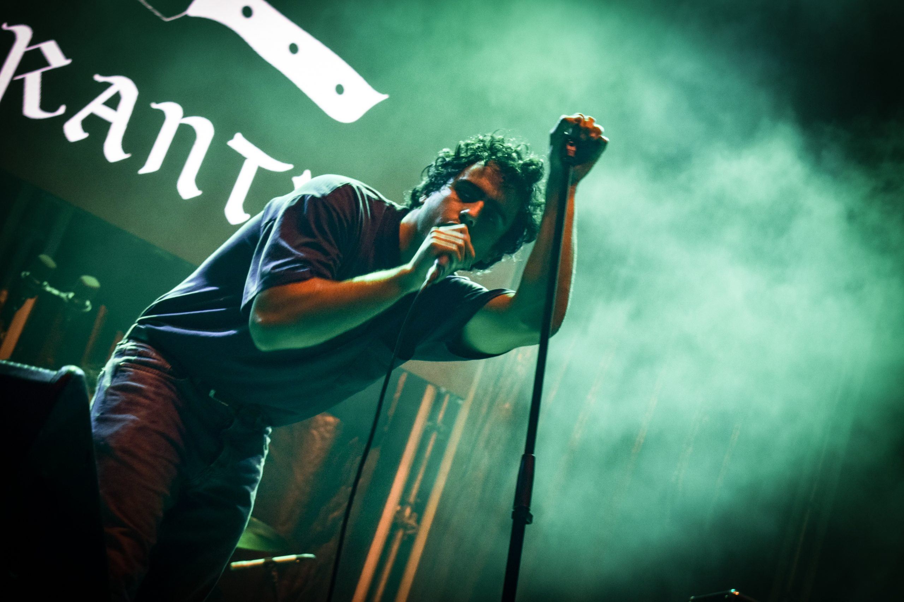
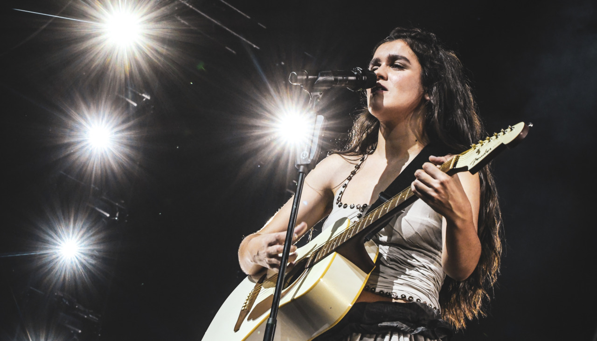
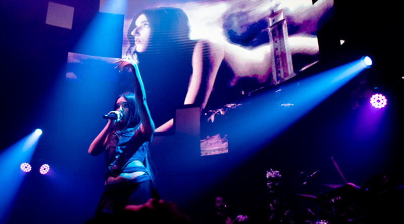

Carolina Durante
Carolina Durante se encuentra inmersa en su gira "Elige tu propia aventura", que va a cerrar a finales de 2026 e inicios de 2027 con su tour de despedida "Fin de la aventura". Esta fase final incluye conciertos multitudinarios de su carrera en recintos de gran formato.

Amaia
Amaia Romero tiene confirmada su "Gira Arenas 2026" para la temporada que viene, visitando grandes pabellones y arenas, con grandes participaciones destacadas en festivales veraniegos.

Judline
Judeline se encuentra actualmente inmersa en su segunda gira mundial, presentando su aclamado album debut Bodhiria. Durante el primer semestre de 2026, la artista gaditana ofrece conciertos destacados en America Latina y Europa.